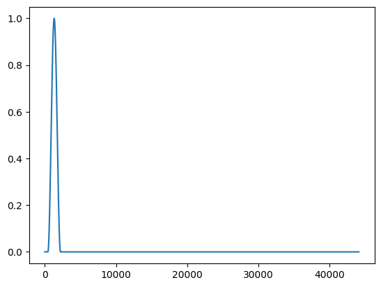
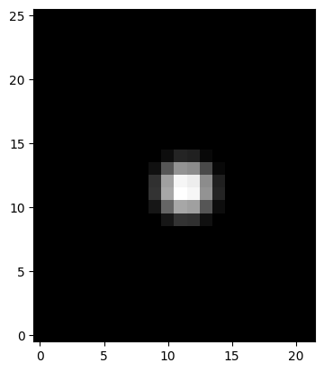

import matplotlib.pyplot as pltExcitation functions
::: {#cell-3 .cell 0=‘e’ 1=‘x’ 2=‘p’ 3=‘o’ 4=‘r’ 5=‘t’ 6=‘i’}
import numpy as np:::
::: {#cell-5 .cell 0=‘e’ 1=‘x’ 2=‘p’ 3=‘o’ 4=‘r’ 5=‘t’}
def create_1d_raised_cosine(
duration: float,
start_time: float,
end_time: float,
amplitude: float,
sample_rate: float,
):
"""
Create a 1D raised cosine excitation with time parameters in seconds.
Parameters
----------
duration : float
Total duration of the excitation (in seconds).
start_time : float
Start time of the excitation (in seconds).
end_time : float
End time of the excitation (in seconds).
amplitude : float
Amplitude of the excitation.
sample_rate : float
Sample rate (samples per second).
Returns
-------
excitation : ndarray
The excitation signal.
"""
num_samples = int(duration * sample_rate)
excitation = np.zeros(num_samples)
start_index = int(start_time * sample_rate)
end_index = int(end_time * sample_rate)
if start_index < 0 or end_index > num_samples or start_index >= end_index:
raise ValueError("Invalid start_time or end_time range.")
excitation[start_index:end_index] = (
amplitude
* (1 - np.cos(2 * np.pi * np.linspace(0, 1, end_index - start_index)))
/ 2
)
return excitation:::
rc = create_1d_raised_cosine(
1,
0.01,
0.05,
1,
44100,
)
plt.plot(rc)
::: {#cell-7 .cell 0=‘e’ 1=‘x’ 2=‘p’ 3=‘o’ 4=‘r’ 5=‘t’}
def create_raised_cosine(Nx, Ny, h, ctr, epsilon, wid):
"""
Create a raised cosine function on a 2D grid.
Parameters:
Nx (int): Number of grid points in the x-direction.
Ny (int): Number of grid points in the y-direction.
h (float): Grid spacing.
ctr (tuple): Center of the raised cosine (x, y).
epsilon (float): Scaling parameter.
wid (float): Width of the cosine.
Returns:
np.ndarray: Flattened raised cosine array.
"""
# Create the grid
X, Y = np.meshgrid(np.arange(0, Nx + 1) * h, np.arange(0, Ny + 1) * h)
# Compute the distance
dist_x = (X - ctr[0]) ** 2
dist_y = (Y - ctr[1]) ** 2
dist = np.sqrt(dist_x + dist_y)
# Compute the indicator function
ind = np.sign(np.maximum(-dist + wid / 2, 0))
# Compute the raised cosine
rc = 0.5 * ind.T * (1 + np.cos(2 * np.pi * dist.T / wid))
# Flatten the array
# rc = rc.ravel()
return rc, X, Y, dist, dist_x, dist_y:::
from matplotlib import pyplot as plt# Example usage
Nx, Ny = 25, 21 # Grid dimensions
h = 0.0438 # Grid spacing
ctr = (0.5, 0.5) # Center of the raised cosine
epsilon = 1.2000 # Scaling parameter
wid = 0.3 # Width of the cosine
rc, X, Y, dist, distx, disty = create_raised_cosine(
Nx,
Ny,
h,
ctr,
epsilon,
wid,
)
plt.imshow(rc, cmap="gray", origin="lower")
::: {#cell-10 .cell 0=‘e’ 1=‘x’ 2=‘p’ 3=‘o’ 4=‘r’ 5=‘t’}
def create_pluck_modal(
lambdas: np.ndarray, # eigenvalues of the Laplacian operator
pluck_position: float = 0.28, # position of pluck on the string in meters
initial_deflection: float = 0.03, # initial deflection of the string in meters
string_length: float = 1.0, # total length of the string in meters
) -> np.ndarray:
"""
Create a pluck excitation for a string with a given length and pluck position.
The pluck is modeled in the modal domain.
Parameters
----------
wavenumbers : np.ndarray
The wavenumbers of the modes.
xe : float
The position of the pluck in meters.
hi : float
The initial deflection of the string in meters.
length : float
The length of the string in meters.
Returns
-------
np.ndarray
The pluck excitation in the modal domain.
"""
lambdas_sqrt = np.sqrt(lambdas)
# Scaling factor for the initial deflection
deflection_scaling = initial_deflection * (
string_length / (string_length - pluck_position)
)
# Compute the coefficients
coefficients = (
deflection_scaling
* np.sin(lambdas_sqrt * pluck_position)
/ (lambdas_sqrt * pluck_position)
)
coefficients /= lambdas_sqrt
return coefficients:::